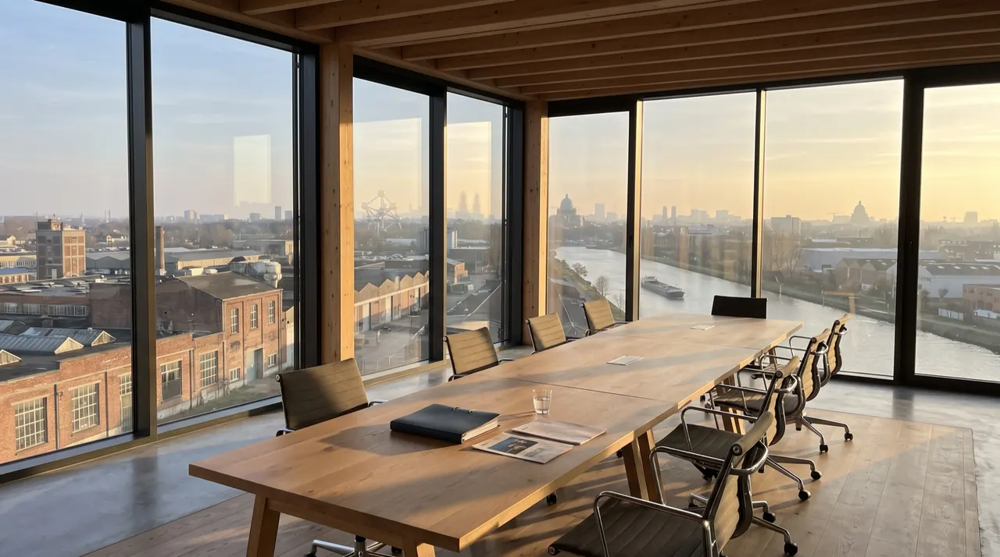
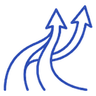
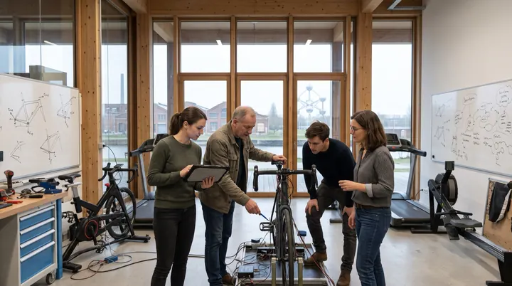
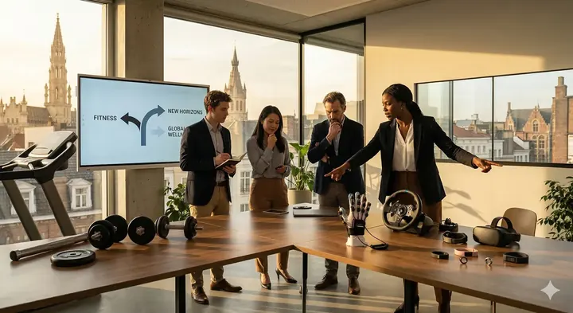
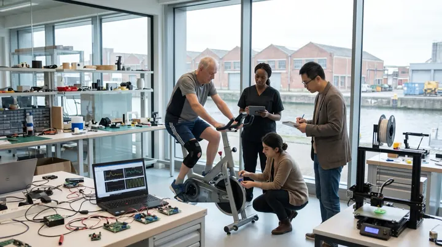
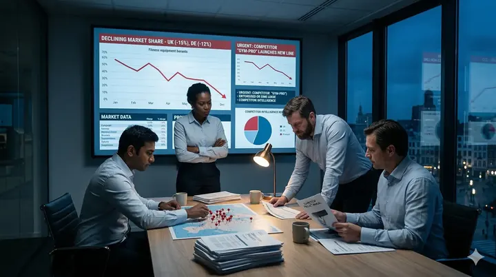
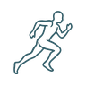

What is The Disruptor?
The Disruptor is a single-player simulation in which you run the innovation portfolio of Vélox Dynamics, a Belgian fitness-equipment company trying to reinvent itself. You arrive as the new Chief Innovation Officer with a board behind you, a workforce watching, and a pile of proposals already on your desk.
Play unfolds dynamically. In each week, messages arrive in the Cockpit: new project proposals, events, warnings, staff requests, competitor moves, board nudges. You read, you decide, you act, and the consequences work their way back through the firm. Between weeks you can adjust your innovation strategy, manage IP, hire and reshape teams, tune the Vélox+ platform, launch products, and place bets on start-ups.
A full run takes a couple of hours if you're new, less once you know the rhythm. There's nothing to install, no account to create, no data to upload. You can play it in a browser, or save a copy of its folder and play offline on a train.
New in Version 2
Version 2 keeps the firm, the systems and the rhythm of the weeks, and adds four things a returning player or a lecturer will notice.

The Board in Person
Each year opens with the management board meeting on the firm’s direction. Its members argue in front of you, and the CEO, Katrien De Wolf, decides: the board may stay the course, shift its emphasis or change strategy. A pack on your desk then sets out the year’s goal for innovation income and the objectives that go with it.
The Year-End Appraisal
At the end of the first and second years you sit with the board and answer its questions about the year. You have to explain yourself and read the room. Katrien gives you a score, and the appraisal shapes the budget you are given for the year ahead.
AI and Innovation
On the AI & Innovation tab of the Organisation window you decide how far AI goes in R&D, from Copilots through AI in Design & Testing to Agentic, and pay for it from the innovation budget. You also choose a provider, how your people learn the tools and who may use the firm’s data. These choices reach staff, intellectual property and the firm’s purpose, and AI brings news of its own.
 Judged by Vélox and by the Game
Judged by Vélox and by the Game
The tenure closes with a report, Your tenure at Vélox, which sets the board’s view of your results beside the game’s own assessment of how you used the tools of corporate entrepreneurship and innovation management.
Watch, Listen, Read
Three short overviews of the game, generated by Google's NotebookLM from the project's source brief. They're AI-generated, so the emphasis and tone are its own, but useful as a quick orientation before (or instead of) reading the rest of this page. They were made for Version 1 and do not cover what is new in Version 2.
Video explainer
A short walk-through of what the game is, who it's for, and how it plays.
Podcast overview
A conversational audio explainer: two voices discussing the simulation's purpose, its systems, and its teaching value.
Infographic
A single-page visual summary: the role, the world, the systems, and the scorecard. Click to view full size.

The Experience
Decisions Under Uncertainty
Should you fund the risky AI coaching platform or double down on proven rehabilitation equipment? The board wants revenue. The Foundation wants sustainability. Competitors are moving fast. You cannot optimise for everything.
 Portfolio Across Three Horizons
Portfolio Across Three Horizons
You inherit a handful of R&D projects and build from there. H1 protects today's revenue and is the safer bet. H3 builds the future and fails more often. Too many projects spread staff thin. Too few leave your pipeline empty at review time.
 Launch Timing and Overload
Launch Timing and Overload
Innovations must be prepared through readiness activities before launch. Launch too early: failure, brand damage. Wait too long: competitors move first. Launch too many at once: organisational overload, everything suffers.
People Under Pressure
Ten disciplines, five seniority levels. Every system needs people: R&D, alliances, standards, scouts. Hire wrong and projects stall. Neglect salaries and key talent leaves. Push too hard and change fatigue sets in.
 Alliances and Open Innovation
Alliances and Open Innovation
230+ potential partners. Negotiate IP, revenue shares, exclusivity, duration. Partners have their own agendas. IP can leak. The absorptive capacity principle applies: alliances work best when your internal capability already exists.

Competitive DynamicsTen competitors make moves through the game, the most threatening most often. They launch products, form alliances, file patents. Competitive events arrive as interruptions demanding immediate decisions.
No Single Winning Strategy
Dynamics first. The simulation was built on findings from innovation and corporate entrepreneurship research. Causal ambiguity is a design goal: multiple systems interact, decisions have delayed consequences, and the same strategy produces different outcomes on different playthroughs. Players can argue about why something happened, because the answer is genuinely complex.
Managerial Practices & Systems
This is the working surface of the CIO role. Each practice below is a live part of the simulation, a lever the player actually pulls, not a topic to read about. Across a three-year tenure, the player moves between these practices continuously: shaping strategy, running the pipeline, building the team, managing relationships outside the firm, and protecting what the firm knows.
They do not sit in silos. Alliances feed the pipeline. Hiring shapes what can be built. Platform choices lock in or unlock partners. IP posture changes how rivals behave. Learning the job means learning how these levers pull on each other, and which ones matter most in your situation.
Set the Innovation Strategy
Choose horizon ambition, risk appetite, and where to place bets. Each year the management board meets on the firm’s direction and the CEO decides it.
Run the R&D Portfolio
Fund, kill and rebalance projects across three horizons. Decide what gets staffed, what waits, and what you stop.
Launch Innovations
Ready projects for market, pick the moment, and manage organisational load so the next launch lands well.
Build and Lead the Team
Hire across disciplines, set pay and workload, track engagement, and keep the people you cannot afford to lose.
Shape the Organisation
Choose the R&D structure and the culture policies that make the team able (or unable) to do new things.
Negotiate Alliances
Find partners, negotiate IP, revenue share and exclusivity in multiple rounds, and manage the relationship afterwards.
Run the Platform
Decide how open Vélox+ is, how complementors are priced, and how data flows. Live with the lock-in your choices create.
Manage IP
Patent, keep as trade secret, or publish. Choose an offensive, defensive or balanced stance and pay the costs.
Scout the Outside World
Point scouts at the opportunities you care about and turn what they bring back into projects, partners or pivots.
Work with Universities
Sponsor PhDs, commission contract research, and build the deep capability that no alliance will ever sell you.
Invest in Start-ups
Scan the venture landscape, make minority investments, and decide whether to go it alone or co-invest.
Crowdsource Ideas
Run internal idea flows and external open calls, then decide which raw ideas deserve a real project.
Engage with Standards
Meet compliance gates, participate in standards bodies, and spot where a standard-essential patent is worth the fight.
Chase Grants
Apply for regional, national and European funding. Unlock the grants that require the right partners and capability.
Read the Numbers
Watch the P&L, product profitability and cost drivers. Meet revenue targets without starving the long bets.
Respond to Competitors
Track rival moves, pick your fights, and decide when to match, leapfrog or ignore a competitive threat.
Game Modes
The Disruptor has one core game, the Forge, and three harder versions (Pivot, Jugaad and Gauntlet) which the start screen lists as advanced modes and still marks as experimental. Each has its own starting conditions, budget, pressure, and story. Pick one to suit the teaching purpose: from a gentle first playthrough to a high-pressure challenge.
| Version | Length | Budget at the start |
|---|---|---|
| Forge, Full Tenure | 3 years | €32M, fresh each year |
| Forge, Probation | 1 year | €32M |
| Forge, Incubator | 3 years | €28M |
| Pivot | 3 years | €26M |
| Jugaad | 3 years | €18M |
| Gauntlet | 3 years | €24M |

Forge
StandardThe full entrepreneurship and innovation experience. All managerial practices and systems available from day one. Standard budget, a full three-year tenure or a one-year Probation that can lead on to the full term, balanced competitive pressure. The default mode, and the one most students will play first.

Pivot
Medium–HardPivot Vélox into a new sector: wellness, medical, defence, or games. Build new capabilities, forge new alliances, and launch products the company has never made. Tighter budget than Forge, and sector-specific events and objectives that reshape the strategic problem.

Jugaad
Hard, FrugalHalf the budget. Twice the creativity. Master frugal innovation through grants, alliances, lead users, and external knowledge. You cannot out-spend your rivals, so you have to out-think them. Capabilities decay faster, so every move has to earn its keep.

Gauntlet
Very HardHostile markets, tight budget, relentless targets. Core markets are eroding. Competitors are circling. Only breakthrough innovation will save you. Designed for experienced students and competitive challenges: expect to lose a few times before you win.
The Incubator: a Forge variant for teaching
Forge also runs in Incubator mode: students begin with two systems open (the R&D Portfolio and the Innovation Launchpad) and open the rest themselves, one at a time, when they are ready. An educator can set the order by asking students to open the system that matches the week’s topic. Targets are gentler, competitive pressure is lower, and the board does not end the appointment over a poor record. It's the easiest way to onboard a cohort that has never played the game before, and the most flexible way to weave the game into a structured syllabus. More detail on the For Educators page.
Mini-Games
Three arcade-style games fire at key moments: embodied learning that makes abstract concepts tangible.
Design Thinking Pinball
Pinball mechanics mirror how design thinking bounces between ideas. Rewards capability boosts.
Lead User Patrol
Defender-style game. Identify unmet customer needs from lead users. Feeds scouting missions, teaching von Hippel's principle.

Wellness Ecosystem ChaseComplementor and ecosystem building. Boosts platform.
Concepts in the Game
Core innovation-management concepts are embedded in the game's systems and events: absorptive capacity, organisational ambidexterity, appropriability and value capture, creative destruction, diffusion of innovations, dominant design, dynamic capabilities, national innovation systems, open innovation, path dependence, platform strategy, structural holes, and VRIN resources.
Students experience these through decisions rather than reading. See For Educators for the full list with in-game mappings.
 The End of a Tenure
The End of a Tenure
The end screen shows each year with the board (income against the goal and the objectives met) and the board’s view of your tenure. Beside it stands the game’s own view, The Disruptor’s score, with a short word on what you did well and what to try next time. The report you download, Your tenure at Vélox, sets out what you chose each year and what the board said, and gives the game’s assessment of how you used the tools of corporate entrepreneurship and innovation management, area by area, in words. It is written for reflective essays and class discussion. A postcard of your tenure comes with it.
Ammon Salter
Warwick Business School, University of Warwick
The Disruptor was built through sustained iteration with generative AI. Most of the work was done in conversation with different Claude models: drafting, testing and reshaping the design, writing and rewriting the content and code, and working through design issues and bugs loop by loop, adding features slowly and carefully, and ensuring the flow of the game worked for human players. Codex helped build the mini-games. GPT-5 and Gemini contributed on content and images. It takes a village of LLMs to build an educational simulation, but human attention is still required to design the systems, to ensure the quality of content, to judge the playing experience, and to inject some humour, joy and personality. The game reflects my attempt to translate years of research and teaching into play, drawn from a lifetime of playing games myself.
With Thanks
The Disruptor has benefited from colleagues, students, and friends who played the game, probed its systems, and pushed it to be sharper. Their feedback helped shape the Vélox world, the systems, and the feel of the cockpit.
Academic advisors and contributors: colleagues at Warwick Business School and beyond who helped shape the concepts, the teaching angle, and the case itself.
Beta testers: Students of the Corporate Entrepreneurship course, Masters in Management programme, Warwick Business School 2025–26. They play-tested an early version and made many excellent design suggestions, which I have tried to incorporate.
Content licensed under Creative Commons CC BY-NC-SA 4.0; software under PolyForm Noncommercial 1.0.0. Free to share, copy, and adapt for non-commercial educational purposes. No licence fees, no registration, no per-student charges. See the full licence.